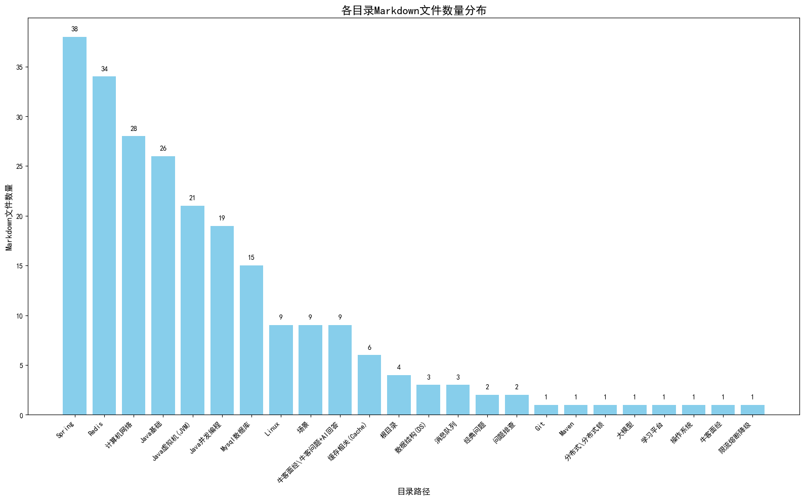

Markdown文件统计报告
各目录Markdown文件数量分布

统计详情
目录路径
Markdown文件数量
Spring
38
Redis
34
计算机网络
28
Java基础
26
Java虚拟机(JVM)
21
Java并发编程
19
Mysql数据库
15
场景
9
Linux
9
牛客面经\牛客问题+AI回答
9
缓存相关(Cache)
6
根目录
4
数据结构(DS)
3
消息队列
3
经典问题
2
问题排查
2
牛客面经
1
大模型
1
操作系统
1
学习平台
1
Git
1
分布式\分布式锁
1
Maven
1
限流熔断降级
1
总计
236